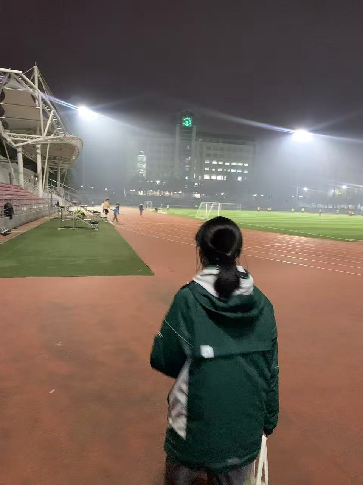

🎓 毕业快乐，LuoBuBu！这是份额外送给你的毕业彩蛋 💝
点开有惊喜喔！

初中毕业快乐！接下来的 6 天，草原的风、沙漠的星、火山的落日，都是为你准备的 ✨
愿你带着好奇出发，满载快乐回家 🚙💨
南京 ⇄ 呼和浩特双飞 ｜ LuoBuBu初中毕业旅行（一家三口同行）｜ 6天5晚（8/4晚到）｜ SUV 亲子自驾环线
2026年8月4日 晚 飞抵 ⇄ 8月9日 返程
三个目的地相对呼和浩特的方位：草原在东北、火山在正东、沙漠在西南（鄂尔多斯/达拉特旗）。按「东北 → 东 → 西南 → 回程东」走，刚好是一个不回头的环线，全程高速或铺装省道，几乎没有冤枉路。提前一晚（8/4 晚）到达，让 8/5 成为完整的市区松弛/采购日，8/6 一早取车出发，全程不赶。
* 距离为近似自驾里程，实际以导航为准；8月为内蒙古旺季，草原/沙漠景区车流较大，建议早出发。
🟢草原 · 🟣火山 · 🟡沙漠 · 🔵城市/机场。实线=自驾段（D2 起）；D0/D1 在呼和浩特无车，靠打车/公共交通。距离为近似自驾里程，以出发前导航为准。本行程 5 晚住宿 ✅ 均已预订。
| 航段 | 日期 | 航班 | 航司 / 承运 | 时刻 | 航站楼 |
|---|---|---|---|---|---|
| 去程 | 8/4 | HU7856 | 海南航空（新海航） | 16:05 南京 → 18:30 呼和浩特 | 南京 T1 起 / 白塔降 |
| 回程 | 8/9 | MF3502（实际承运 MU2892） | 厦门航空代码共享 · 东方航空执飞 | 23:50 呼和浩特 → 次日 01:55 南京 | 白塔起 / 南京 T2 降 |
16:05 南京禄口 T1 起飞（海南航空 HU7856）→ 18:30 抵达呼和浩特白塔机场。打车或机场大巴进市区（约 15km，30–40 分钟，打车约 ¥50–80）。今晚不取车；预计 18:30 落地 + 进市区 + 办入住，约 20:00 安顿好。若还有精神，酒店在回民区（清真美食核心），落地第一晚不想跑远可就近逛吃（见下）；累了就早休息，让身体从低海拔（南京）先适应，为去草原（约 2100m）做准备。
自然醒（酒店含双早·下午茶·宵夜，双早约 08:30 下楼吃），今天不赶、不取车，当作到达后的缓冲 / 适应日（低海拔南京 → 上草原前先缓一缓）。
08:30 店员送车上酒店（锦颐优选·新华西街附院店）——订单已分配车牌，车到后现场核对、验车、签合同（详见第四节租车订单；车牌以携程订单短信为准）。
07:30 草原日出 / 晨景：补拍、骑马或草原漫步（草原多留半天，不赶）。
09:00 草原出发 → 乌兰哈达火山地质公园（察右后旗），向东约 120km，约 1.5–2 小时。
08:30 火山周边慢行 / 补拍（若昨天未尽兴）；或睡个懒觉再出发，节奏宽松。
10:30 出发 → 响沙湾（库布齐沙漠），向西经 G6 京藏高速，约 280–300km（这是全程最长的一段，但一脚油门直达、不回头；G6 会擦过呼和浩特北缘高速走廊，属顺路穿过非进城），3–3.5 小时，别赶。
💡 D5 不专程进市区：回程沿途顺路采购伴手礼（想逛街再去牛街/摩尔城）→ 15:00 东北郊看《千古马颂》（演出地离机场仅约 20 分钟，看完顺去机场）→ 东北郊/机场方向就近告别晚餐 → 21:30 租车公司机场取回车；行李全程留车上直到机场。《千古马颂》已锁定 380 尊宾×3·实付 ¥1,140（E 区 4 排 3/4/5 座，2号门入口兑纸质票，扫码核销时屏幕亮度调到最高）。伴手礼（牛肉干/奶贝/奶酪）均可托运；奶酒等液体>100ml 必须托运、且部分航班限带。红眼航班次日 01:55 到南京 T2，落地约凌晨 2 点，提前约车回家。
原则：带娃优先独立卫浴 + 空调 + 干净；热门景区（草原/沙漠）周末极易满房，提前 1–2 周预订；想体验特色（蒙古包/沙漠夜）选高品质款，不介意则住旗县连锁最稳最省。
| 晚 | 日期 | 住宿地 | 推荐区域 / 类型 | 参考价/晚 | 为什么选这 |
|---|---|---|---|---|---|
| 1 | 8/4 | 呼和浩特 ✅已订 | 锦颐优选酒店(新华西街附院店)（回民区新华西街·明泽广场北侧·附属医院地铁站760m）；含双早·下午茶·宵夜·房型以订单为准 | 已订·¥700（8/4–8/6 共2晚合计） | 到达夜早休；D1 大召寺/塞上老街打车/地铁约2.5–3km；8/6 送车上门；14:00退房 |
| 2 | 8/5 | 呼和浩特 ✅已订 | 同上（连住不搬家，8.4–8.6 共2晚） | —（连住，含在¥700内） | 市区松弛日，免搬行李 |
| 3 | 8/6 | 草原·辉腾锡勒 ✅蒙古包 | ✅已订：勒勒车蓝天民宿二部度假山庄（辉腾锡勒草原黄花沟店，4.8/294评，营区高地+充电桩）；主店·察右中旗勒勒车蓝天度假山庄/黄花沟旅游区店 5.0/373评 为备选；均有篝火/烟花/家庭房；✅已订房型：蒙古包家庭星空包(2层·星空顶·视野无敌·¥446)，一家三口体验最佳；三人间(1层炕·¥288)为平层备选；候选：黄花沟金帐汗(4.4–4.5纯蒙古包)、辉腾锡勒黄花驿站(4.4) | ¥446（✅已订） | 带娃体验草原夜；订时确认独立卫浴+保暖(夜温10-15℃)+充电桩（宋Pro可补电）；旺季周末满房快，尽早订 |
| 4 | 8/7 | 火山·乌兰哈达 | ✅已订：魅力火山·星野围炉民宿(乌兰哈达火山地质公园店)（4.8/383评，同价位评分最稳；有充电桩宋Pro可补电；自助早餐+萌宠+围炉煮茶+篝火演出+敬哈达，亲子活动最丰富；与星宿/花筑同处牛明村、距火山~2km，D3/D4里程不变）；备选：花筑·乌兰天空(4.8/~300评·亲子主题房最全，但充电桩未列需确认) | ¥519（✅已订·白银实付） | 同价位评分最稳(4.8/383评)、带桩、亲子体验最丰富；白银会员价已到底(=钻石85折顶格)，无需升钻石；8/7周六·✅已订 |
| 5 | 8/8 | 沙漠·响沙湾 | ✅已订：星辰疌行房车露营地（4.9/27评·新开业，景区内近福沙岛·家庭房可住3人·智能客控·房车对初中生娃有记忆点；在沙侧、D5晨游可直接进不折返）；已购仙沙岛套票¥900/3人单列门票；备选：一粒沙度假村(4.3/872评·¥298起，最便宜但评分最低)、福沙度假岛(4.7/1486评·¥2360起) | ✅已订·¥800（1晚·8/8） | 真·沙里+评分最高(4.9)+房费仅顺沙/福沙的1/3；不玩悦沙岛故不选悦沙帐篷；下单前确认住客含索道接驳；✅已订 |
🛏 5 晚住宿✅均已订：锦颐优选·新华西街附院店 ¥700（8/4–8/6 共2晚合计） + 草原蒙古包¥446 + 火山魅力¥519 + 星辰疌行房车¥800（1晚·8/8）；合计 ¥2,465（700+446+519+800）。
| 项目 | 估算 | 说明 |
|---|---|---|
| 南京⇄呼和浩特机票（已定） | 已定·¥4020 | 二大一小合计✅已订：8/4 HU7856 去 / 8/9 红眼 MF3502（东航 MU2892 执飞）回；娃儿童票 |
| 租车 宋Pro新能源(25款) 3天13小时（不含油） | 已订·¥1500 | 携程已订（订单号略·车牌以订单为准）/ 8/6 08:30 送车上酒店 → 8/9 21:30 白塔机场取回车 |
| 油费 + 过路费（+充电费） | ¥700–900 | 混动油费约¥304 + 环线过路约¥400–600 + 插混充电费极少（已含）；租车¥1500 不含此项 |
| 住宿 5 晚 | ¥2,465 | 锦颐优选¥700（2晚合计）+蒙古包¥446+火山魅力¥519(白银实付)+星辰疌行房车¥800（1晚·8/8）；合计¥2,465；详见第三节 |
| 门票 + 演出（响沙湾套票✅已订 + 黄花沟外围免费 +《相会敖包》¥654 +《千古马颂》¥1,140） | ¥2644 | 响沙湾套票✅已订 ¥850（携程·二成人一大童·含入园门票+往返索道+仙沙岛骑骆驼/滑沙/冲浪车/高空滑索/果老剧场）；黄花沟走外围免费草原（省大门票/小火车/索道·约¥885），仅自驾到南门看15:00《相会敖包》单独演出票¥218/人×3=¥654（女儿按成人）；黄花沟大门票（¥90/人）待官方确认——若确认凭单独演出票不能进、需另购，则二大一小 +¥270，本行变 ¥2,914、总预算 +¥270；《千古马颂》D5 15:00场·东北郊敕勒川（百匹马实景剧，女儿全价·无儿童票，380档·尊宾·大麦官方¥380/张×3=¥1,140·已锁·E 区 4 排 3/4/5 座·凭证以大麦订单为准·不退不换）；哈达门已去掉；合计 ¥850+¥654+¥1,140=¥2,644（未含待确认大门票） |
| 餐饮 6 天 | ¥1800–3000 | 人均 ¥100–170/天 |
| 合计 | ¥13,109–16,509 | 丰俭由人；机票¥4020 + 租车¥1500（不含油/充电费） + 油费过路充电¥700–900 + 住宿¥2,465 + 门票演出¥2,644 + 餐饮¥1800–3000 = ¥13,129–14,529；D0/D1 附院店¥700（2晚）、D4星辰房车¥800、响沙湾套票¥850、租车¥1500 均已填入确认 |